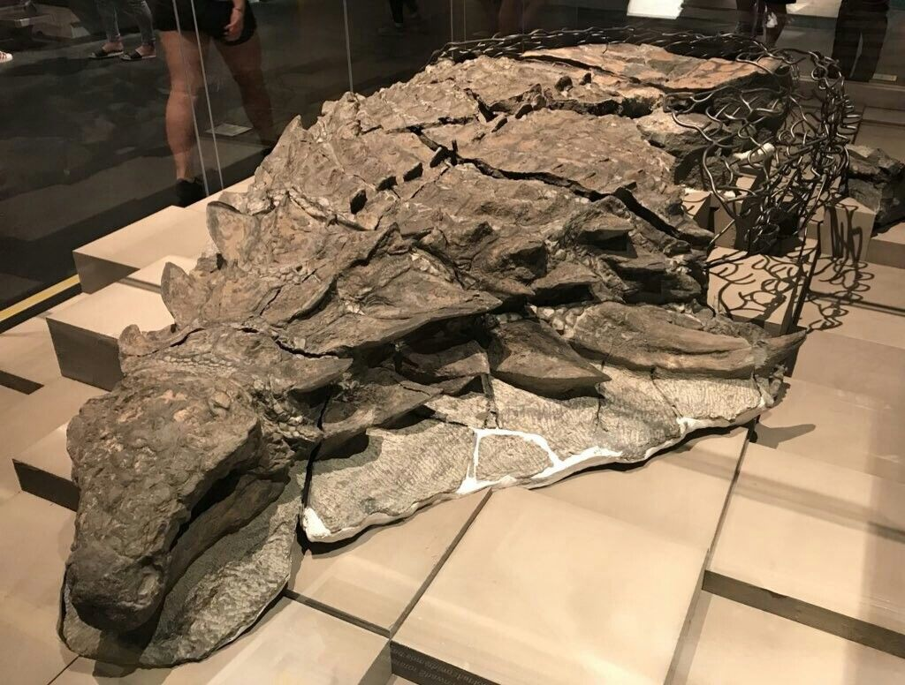
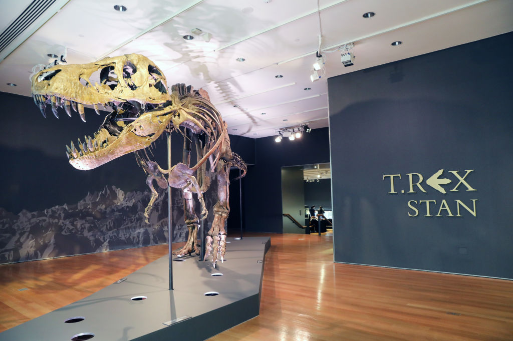
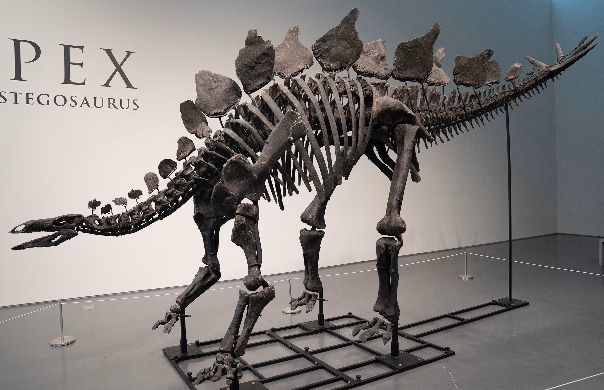
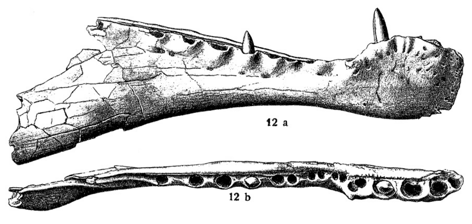
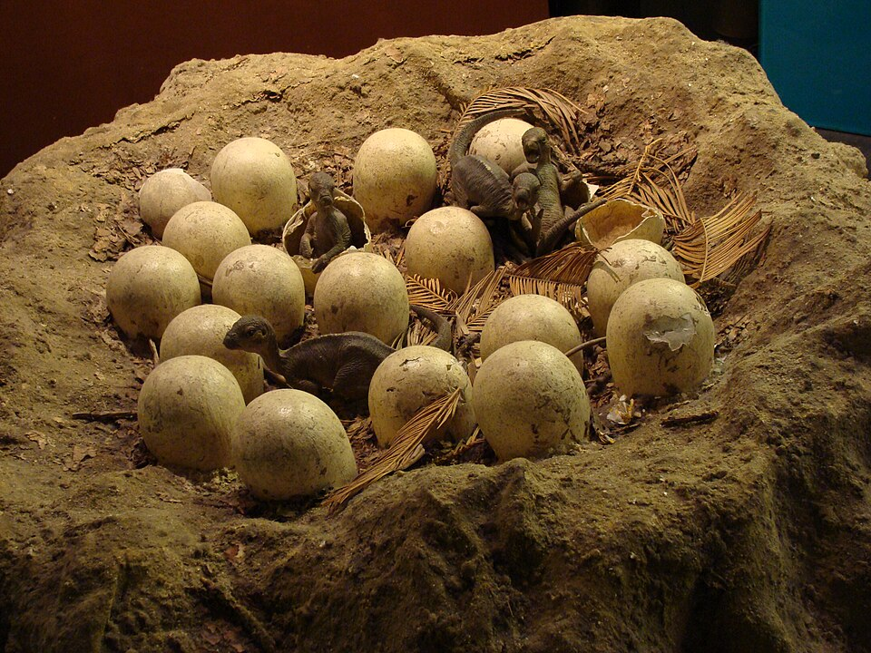
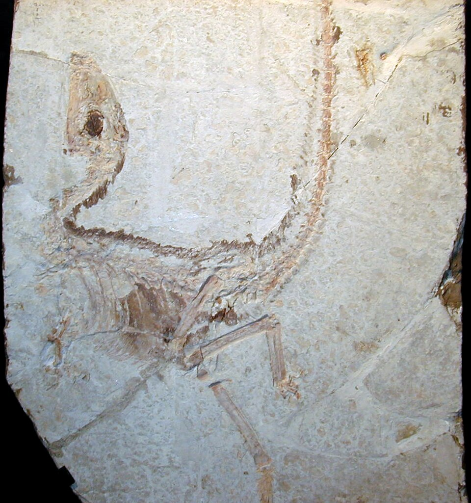

DinoDex
Deep Time
Dinosaurs · Palaeontology · The Mesozoic World
Explore dinosaurs, fossil evidence, palaeontology's big discoveries, and the changing world they lived in - from the first dinosaurs of the Triassic to the aftermath of the end-Cretaceous extinction.
Reading the
bones
Animals that reshaped how we understand dinosaurs and their Mesozoic world - chosen not for fame but for what each one taught us. Every entry separates what the fossils show from what scientists are still arguing about.
Animals grouped by broad geological period - Triassic, Jurassic, and Cretaceous - not by exact first or last appearance date. Includes non-dinosaur animals of the Mesozoic world. Click any name to open its entry.
Slide through the Mesozoic
Move the slider through deep time and see which DinoDex animals overlap that moment. Click any name to open its entry.
Fossil ranges are approximate. Animals shown together are time-neighbours, not necessarily ecosystem-neighbours.
Deep Time
Everything on this page before the scale break is drawn to true proportion. The Precambrian - the first four billion years - dominates because it should. Scroll down through time; click any marker to learn what Earth was like and what, if anything, was alive. At the bottom, the last 66 million years have been expanded so that the recent past is visible at all. On the proportional scale above, all of recorded human history occupies less space than a single pixel.
Two of the most iconic dinosaurs in popular culture never shared the Earth. By the time T. rex was wiped out 66 million years ago, Stegosaurus had already been extinct for 79 million years. Each dot marks a last known occurrence. The timeline is drawn to true proportion.
The strip below shows the last 252 million years drawn to true proportion - from the start of the Triassic to now. Each colour represents an era. Hover any band for context. The rust sliver at the far right is the entire existence of our species; click it to see how we measure up.
Our entire species fits inside this sliver
Homo sapiens has existed for 0.16% of the entire Mesozoic era. All of recorded history - every civilisation, dynasty, and written word - is 0.0027% of the Mesozoic era.
How long have we existed compared to the dinosaurs?
All of recorded history - every civilisation, dynasty, and written word - is 0.0027% of the Mesozoic era.


The People Behind
Deep Time
Follow the science from early fossil collectors to the people who named dinosaurs, fought over them, reimagined them as active animals, explained their extinction, and uncovered their feathered descendants.
Built with AI Disclaimer
This site should not be treated as an absolute source of truth. DinoDex has been built with significant AI assistance, whether for research, drafting, or both. Everything has been human-reviewed, though I am not by any stretch an expert. It is likely that there are at least a few errors within this site, especially with lesser-researched species. With the field moving fast, I will continue to revise details based on new findings.
I appreciate the concerns of the palaeontology community surrounding AI usage. I have tried to use AI responsibly, intending to avoid any copyrighted texts and palaeontology books. Images are mostly sourced through Wikimedia and any AI tools used for research have been clearly instructed to avoid copyrighted content as well as to intentionally prioritise the most trusted sources.
I've tried to be honest about uncertainty throughout, adding confidence levels and competing interpretations, as well as regular deliberate acknowledgement of areas where things are still unknown.
This is a passion project, not a textbook. The primary audience for this site is myself, though I wanted to be transparent regardless.
Anatomy 101
A guide to dinosaur anatomy — how bones, muscles, and body plans are read from fossil evidence.
This section is being researched and built.
Mesozoic Ecosystems
The environments, food webs, and ecological relationships of the Triassic, Jurassic, and Cretaceous worlds.
This section is being researched and built.
Mass Extinctions
The five major extinction events in Earth’s history and what they tell us about life’s resilience and fragility.
This section is being researched and built.
What a Fossil Is and How It Forms
How a fossil forms
A fossil is any physical evidence of past life preserved in rock - a bone, a shell, a footprint, a burrow, a smear of carbon where a leaf once lay. The word comes from the Latin fossilis, meaning simply "dug up." But before anything can be dug up, an unlikely sequence of events has to unfold over millions of years - and at almost any point in that sequence, the evidence can be lost entirely.
When an animal dies, soft tissue begins to decay within days. Without rapid burial, scavengers scatter the bones, soil acids dissolve what remains, and within decades almost nothing is left. The first requirement for fossilisation is speed: sediment - river silt, volcanic ash, a collapsing sand dune - must cover the remains quickly enough to protect them from the surface world.
Once buried, a slower transformation begins. Sediment accumulates in layers above, and the weight compacts the material below. Mineral-rich groundwater percolates through the sediment and into the pore spaces of bone, gradually depositing minerals that fill and eventually replace the original tissue - a process called permineralisation. Over millions of years the bone becomes stone, chemically different from what it once was but retaining the original structure in extraordinary detail.
The fossil now sits in bedrock, potentially kilometres below the surface. For it to ever be found, the rock has to come back up. Tectonic forces - the slow collision and separation of plates - uplift rock over millions of years, carrying the fossil closer to the surface. Erosion then does the rest: wind, rain, frost, and rivers strip away overlying rock grain by grain until a fragment of bone appears at a cliff face or eroded hillside. After perhaps a hundred million years underground, it is exposed to the surface world for the first time since burial. If nobody is looking, erosion continues and destroys it within decades. If someone is, that is where palaeontology begins.
Why the record is incomplete
The sequence above requires almost everything to go right. Rapid burial is the exception: most animals that die on land are scavenged, scattered, and dissolved before sediment can cover them. Even those that are buried face millions of years of chemical and geological processes that can destroy what was preserved. The species known through the fossil record are estimated to represent well under 1% of all species that have ever existed. That figure is worth sitting with. It is not a gap that more fieldwork will close. It is a structural property of how the record forms - and it is the starting point for everything else in this section.
Types of fossil
The popular image of a fossil is a bone turned to stone. That is one kind. Fossils also include compressions - organisms flattened to a thin film in fine-grained rock; moulds and casts, where original material dissolves and leaves only a shape in the surrounding sediment; unaltered remains preserved in amber or permafrost; and trace fossils - footprints, trackways, burrows, bite marks, eggs, and coprolites - which preserve not the animal itself but evidence of what it did.
The distinction matters because different fossil types answer different questions. A trackway can preserve gait and, with some assumptions, walking speed - but tells you nothing about the animal's skull. An isolated tooth speaks to diet but almost nothing about body proportions. Knowing what kind of evidence you are holding is the first step towards knowing what you are entitled to conclude from it.
The record is biased, not balanced
Because fossilisation depends on specific conditions, the record is a skewed sample of past life rather than a fair one. Marine environments preserve better than terrestrial ones, because ocean sediments accumulate steadily where land surfaces erode. Hard parts outlast soft tissue - shells, bones, and teeth far outlast skin, muscle, and organs. Large, robust bones survive where small, delicate ones crumble. Floodplains and lake beds yield far more fossils than dry upland forests. And which regions palaeontologists have actually searched shapes the picture as much as what was once alive.
The result is a record richest in large, hard-bodied animals from sedimentary lowland and marine settings, and poorest in small, soft-bodied organisms from dry uplands and under-sampled regions. Any honest reading of past life has to keep that filter in view.
- Mineralised shell, sea floor - hard durable material, steadily accumulating sediment
- Large bone, floodplain - robust material, sediment-rich setting
- Small bone, terrestrial - fragile material, higher destruction risk
- Soft tissue, marine - no hard parts, exceptional conditions required
- Soft tissue, terrestrial - no hard parts, erosion-prone, almost never preserved
How well any one species is known
The same unevenness applies at species level - and it directly shapes how much can be said about any given animal. Around half of all named valid dinosaur species are known from a single specimen; roughly four in five are based on incomplete skeletons. Tyrannosaurus rex sits at the well-documented end of the spectrum, represented by more than forty identified specimens, several of them substantially complete - enough to support confident discussion of growth rates, pathology, and ontogeny. Many species sit at the other end: one partial skeleton, a handful of fragments, or a single tooth. Almost everything that can be said about an animal's biology scales directly with where it falls on that spectrum.
When entries in this guide differ in how much they say, that difference usually reflects the evidence, not the effort.
Windows of exceptional preservation
Occasionally conditions align to preserve far more than bone. Sites of exceptional preservation - Lagerstätten - act as windows onto what the ordinary record conceals, capturing soft tissue, fine anatomical detail, and sometimes entire communities that would otherwise be invisible to science.
Burgess Shale
Preserves soft-bodied Cambrian marine animals - worms, arthropods, early chordates - that have almost no fossil record anywhere else. It revealed how much of early animal life left no ordinary trace.
Solnhofen Limestone
Fine-grained lagoonal limestone that preserved feather impressions and soft-tissue outlines. The source of Archaeopteryx, the most famous transitional fossil in the record.
Yixian Formation
Volcanic ash created conditions fine enough to preserve feathered dinosaurs in microscopic detail, including pigment-bearing structures used to infer colour. It reshaped understanding of the dinosaur-bird transition.
These sites matter not only for what they hold, but for what they imply about everything else. If the Burgess Shale shows a Cambrian sea full of soft-bodied life, it also reveals how much of every other Cambrian sea is missing from the record. Exceptional preservation is the exception that illuminates the rule.
Finding and Recovering Fossils
Palaeontology does most of its prospecting on foot, in places most people would not choose to spend time. Badlands, desert escarpments, eroding cliff faces, dry riverbeds - the landscapes that produce fossils are those where sedimentary rock is actively being stripped away and where bare ground means what erodes out stays visible. Fieldwork means slow walking across exposures, eyes down, looking for the colour and texture of bone among the debris.
Where fossils surface
The bone appearing at a hillside did not travel there. It was buried millions of years ago, and the rock around it has been removed grain by grain until the uppermost edge is exposed. Once exposed, erosion continues at the same rate, and a specimen that nobody finds within a few decades of first appearing may be entirely destroyed. The race between erosion and discovery is genuine.
Sites are found through surface survey, satellite and drone imagery of promising terrain, and - more often than the field admits - local knowledge and chance. Farmers, ranchers, and construction workers have discovered some of the most significant specimens on record. Borealopelta, one of the best-preserved dinosaurs ever found, was spotted by a heavy equipment operator at an Alberta oil sands mine in 2011. The assumption that major discoveries come primarily from academic expeditions substantially understates the role of people who happen to be in the right landscape.

The commercial question
Not everyone who finds a fossil has an academic institution behind them, and where a fossil is found substantially determines what happens to it. In the United States, fossils on federal land are legally protected - they can only be collected under permit and must be permanently held in approved public institutions. Fossils found on private land, however, are the property of the landowner and may be sold commercially, with no access requirements and no obligation to allow research.
The consequences surface periodically at auction. In 2020, a Tyrannosaurus rex known as Stan sold at Christie's for $31.8 million - later acquired for a museum in Abu Dhabi. In 2024, a Stegosaurus skeleton nicknamed Apex sold at Sotheby's for $44.6 million, the highest price ever paid for a fossil at auction. Palaeontologists are not simply irritated by the prices. When a specimen enters private hands, researcher access is not guaranteed, and studies based on privately held material are sometimes blocked from publication because owners can deny subsequent access needed to verify findings. A fossil kept from public institutions is, in an important sense, kept from science.
The legal landscape varies considerably by country. In the UK there is no specific fossil legislation - finds on private land generally belong to the landowner, and there is no mandatory reporting system for significant specimens. Some European countries treat important fossils as cultural property with restrictions on export. China treats significant fossil material as state property. The patchwork of national laws means that where a fossil surfaces significantly shapes what becomes of it.


From site to lab
Once bone is identified at the surface, excavation begins - and this is where irreversible decisions are made. The spatial relationship between bones, and between bones and the surrounding sediment, is scientific data. The orientation of a limb, the position of a skull relative to the vertebrae, what else is present nearby - all inform how the animal died, how it was transported, and how complete the skeleton might be. Once excavation starts, that context is progressively destroyed. Good practice records everything before anything moves: photographs, GPS coordinates, scaled maps, sediment samples from the enclosing matrix.
Bones are extracted still encased in surrounding rock, then wrapped in plaster field jackets - burlap strips soaked in plaster - for transport. In the laboratory, preparation removes that rock using air scribes, pneumatic chisels, dental picks, and chemical consolidants, under a microscope. A significant specimen can take months or years to prepare. The work is also partly interpretive: the boundary between bone and matrix is not always clear, and the decisions preparators make affect what the fossil appears to show.
Technology in the lab
CT scanning allows the interior of a rock block to be imaged without opening it - revealing bones still in matrix, internal skull anatomy, and growth structures that physical preparation might destroy or alter. For small or fragile specimens in particular, imaging first and preparing selectively afterwards has changed what is knowable without irreversible commitment.
Photogrammetry builds accurate three-dimensional models from overlapping photographs, allowing specimens to be measured and studied remotely. This matters because physical access is a genuine bottleneck: researchers who cannot travel to the holding institution cannot fully engage with the material. Digital models extend access without replacing it.
One consequence of improved collection over the last century is that museum storage has grown faster than the capacity to study what it contains. Major natural history institutions hold significant backlogs of uncatalogued and unprepared material. New findings sometimes come not from fieldwork but from re-examining specimens collected decades ago. The published record is a subset, not a complete inventory, of what has actually been recovered.
How We Know When
Working out when a fossil lived is a distinct problem from working out what it was. The two main categories of approach - relative dating and absolute dating - answer different questions and are most powerful when used together.
Sequence before numbers
The foundational approach is stratigraphy: in an undisturbed sequence of rock layers, lower layers are older than upper ones. This establishes the ordering of events without any numbers attached. It places animal A before animal B without saying how many years separate them. Complicating factors - unconformities where erosion removed a section of the sequence, faults that displaced layers, or folding that tilted the whole thing - mean that establishing the correct order is itself a skill requiring geological interpretation, not just observation.
Biostratigraphy extends this principle geographically. Certain fossil species - index fossils - existed for only a short time geologically but were geographically widespread. Finding the same index fossil in two distant locations suggests those layers are approximately contemporaneous. The method was well-established by the early nineteenth century, long before radiometric dating was possible, and it remains a useful cross-check where other methods are unavailable.
Radiometric dating and the bracketing problem
Absolute dating assigns actual numbers of years by measuring the predictable decay of radioactive isotopes into stable daughter products. The central problem for palaeontology is that sedimentary rock - where fossils are found - cannot be reliably dated this way. Sedimentary rock is made of particles eroded from older material, so its constituent minerals could be millions of years older than the layer they now sit in. Measuring their isotope ratios would return the age of those source materials, not the moment of deposition.
What can be dated is volcanic material - specifically the minerals that crystallise when magma or ash cools. When a mineral crystallises from cooling lava, gases including argon (a decay product of potassium) escape completely into the atmosphere. After crystallisation, any argon that accumulates in the mineral lattice must have come from radioactive decay since that moment. Measuring the ratio of potassium to argon gives the time elapsed since the mineral solidified - which is also the time since the ash fell or the lava erupted.
The practical approach is bracketing: date a volcanic ash layer above the fossil-bearing rock and another below it. The fossil is younger than the upper date and older than the lower one. Its age is constrained between two independently dated events rather than measured directly.
Different isotope systems suit different timescales. Argon-argon dating is well-suited to Mesozoic material - it can date volcanic rocks from hundreds of thousands to several billion years old with high precision. Uranium-lead dating, using much longer half-lives, is most useful for the oldest rocks on Earth. Radiocarbon dating, the best-known system to a general audience, works only on organic carbon and reaches back only around 50,000 years - entirely irrelevant for dinosaurs, which are at minimum 66 million years old.
Magnetostratigraphy
A third approach exploits a different physical record. Iron-bearing minerals in cooling lava, and in some fine-grained sediments, lock in the direction of Earth's magnetic field at the moment of formation. Earth's magnetic field has reversed polarity hundreds of times through geological history - north and south magnetic poles swapping - producing an irregular sequence of normal and reversed intervals. This sequence has been compiled into the Geomagnetic Polarity Timescale: a global record of reversals calibrated in years by radiometric dating. A local rock section can be sampled for its polarity pattern and that pattern matched against the timescale to establish age, much as a barcode is matched against a database.
Magnetostratigraphy is particularly useful where volcanic ash is absent and direct radiometric dating is not possible. Because polarity reversals are geologically abrupt and globally simultaneous, they provide time markers that can be correlated across very different depositional environments. The method is most powerful when combined with biostratigraphic and radiometric constraints to confirm the pattern-match.
Convergence and uncertainty
The most reliable ages come when multiple independent methods agree. A fossil bracketed by two argon-argon dates, with biostratigraphic position consistent with both, and a magnetostratigraphy that places it in the right polarity interval, carries far more confidence than one constrained by a single method. When methods conflict, that is a signal to investigate further rather than to choose the most convenient answer.
Every published age carries an uncertainty range, reflecting the precision of isotope measurements, the assumptions in the decay model, and the stratigraphic exactness of the bracketing. The "±" value attached to a date is not a weakness in the science - it is an honest statement of what the evidence can and cannot resolve. Understanding what those ranges mean, and resisting the urge to drop them for narrative convenience, is part of reading geochronological literature carefully.
Classification and Phylogenetics
The names given to extinct animals are not merely labels. They encode claims about evolutionary relationships, and when those claims are revised, the names change too. Understanding how classification works - and why it keeps changing - requires knowing something about the two systems it depends on: nomenclature, the rules for naming, and phylogenetics, the methods for establishing relationships.
The naming system
Every species in the scientific literature has a two-part Latin name - a binomial - consisting of a capitalised genus name and a lowercase species epithet, both italicised. Tyrannosaurus rex, Velociraptor mongoliensis, Triceratops horridus. The system was formalised by Carl Linnaeus in the eighteenth century and is now governed by the International Code of Zoological Nomenclature (ICZN).
A key rule is priority: the first validly published name for a species takes precedence over all later ones. When two researchers independently name the same animal, the earlier name stands. When a name changes - as happens regularly in palaeontology - the animal itself has not changed. What has changed is the scientific understanding of its relationships. A species moved from one genus to another retains its species epithet but acquires a new full name. The creature is the same; the filing has been updated.
Holotypes and what happens when they are lost
Before a species is formally recognised, a researcher must publish a technical description anchored to a specific physical specimen: the holotype. This single specimen is permanently deposited in an accredited public institution and becomes the reference point to which all subsequent finds are compared. The holotype does not need to be complete, typical, or particularly well-preserved - its only function is nomenclatural. It is the permanent anchor of the name.
What happens if the holotype is destroyed? The holotype of Spinosaurus aegyptiacus was held in Munich and lost in a wartime bombing in 1944. Without it, the name entered a prolonged state of uncertainty. The ICZN allows the designation of a replacement specimen - a neotype - under specific conditions, but this is a workaround that requires formal application and community consensus. The loss of original type material is a genuine scientific loss, not a technical inconvenience.

The species concept problem
In living animals, species can in principle be defined by reproductive isolation - populations that do not interbreed are different species. For extinct animals, reproductive behaviour is impossible to observe. Palaeontologists must define species on morphology alone: what the bones look like.
This creates genuine ambiguity. Two specimens that look different might be the same species at different growth stages, different sexes, or from different geographic populations. Two that look similar might have been reproductively isolated for millions of years. The species concept in palaeontology is not a solved problem, and it underlies much of the taxonomic instability that gives the field its reputation for constant name-changing. The instability is real, but it reflects the difficulty of the evidence rather than carelessness in the science.
From classification to cladistics
Earlier approaches to classification grouped organisms by overall similarity. This produced groupings that sometimes reflected shared ancestry and sometimes did not. Dolphins, fish, and ichthyosaurs all share a streamlined body plan - none of that similarity indicates common descent.
Modern palaeontology uses cladistics, developed by the German entomologist Willi Hennig in the mid-twentieth century and adopted widely in palaeontology from the 1980s onwards. Cladistics groups organisms by shared derived characteristics - features inherited from a specific common ancestor rather than arrived at independently. These shared derived features are called synapomorphies. A synapomorphy is a character state that appears in a group of organisms and marks their shared ancestry: it was present in their common ancestor and inherited by all descendants.
The result is a cladogram: a branching diagram of hypothesised evolutionary relationships. A cladogram is not a proven family tree. It is a hypothesis built by coding observable characters across a set of taxa and finding the arrangement requiring the fewest evolutionary changes - the most parsimonious explanation. Different researchers scoring the same characters differently, or selecting different characters, can arrive at different trees. New specimens add new data to the matrix and the optimal tree may shift. This is not a weakness in the method. It is what a hypothesis-driven science looks like when it is working correctly.
What the diagram above illustrates is the logic, not a settled conclusion. Any node could shift if new specimens added characters that changed the most parsimonious arrangement. That has happened repeatedly in dinosaur systematics - the controversial Baron et al. (2017) analysis moved ornithischians out of their traditional position and grouped them with theropods, which would require rewriting the nodes above. The analysis remains contested. The family tree keeps getting redrawn not because palaeontologists are careless, but because the underlying data is genuinely ambiguous at some points and each new find adds to it.
Reading Biology from Fossils
Reading biology from a fossil is an inferential process. The further a claim from what the bones directly show, the more cautiously it should be held. Palaeontology has developed a range of methods for extending beyond the skeleton, each with different confidence levels and different limits.
What the skeleton directly shows
The most direct observations come from the skeleton itself: anatomy and body proportions, the shape and articulation of skeletal elements, and pathology - healed fractures, bone infections, tumours, and arthritic changes that record injury, disease, and survival. The rough surfaces, ridges, and flanges where muscles once anchored are also directly readable: muscle attachment scars provide the raw data for reconstructing how an animal moved.
From that data, biomechanists reconstruct locomotion, posture, and bite mechanics. Finite element analysis applies engineering stress calculations to digital models of bones and skulls, predicting how they respond to different forces and loads. These models are hypothesis-testing tools rather than measurements of behaviour: they tell you which movements were mechanically plausible, not which movements the animal actually used.
Reading deeper into bone
Thin-sectioning a fossil bone reveals internal microstructure. The type of bone tissue and the pattern of growth marks known as Lines of Arrested Growth (LAGs) give estimates of age at death and growth rate. LAGs form annually in many vertebrates - analogously to tree rings - and counting them provides a minimum age for the individual. The spacing between LAGs indicates growth rate at each stage, and the overall bone tissue type carries implications for metabolic rate: the rapidly-deposited fibrolamellar bone seen in birds and mammals indicates fast growth consistent with high metabolism, while the slower lamellar bone typical of non-avian reptiles indicates slower growth. Most non-avian dinosaurs show fibrolamellar bone, a significant line of evidence in debates about dinosaur physiology.
Stable isotope ratios in bone and tooth enamel encode information about diet and environment. Carbon isotopes distinguish different plant food types and trophic levels. Oxygen isotopes reflect body temperature regulation and the composition of water consumed, which varies geographically and seasonally - providing signals for migration and thermoregulation. Strontium isotopes carry a geological signature that differs between rock formations, giving independent evidence for movement across an animal's lifetime.
Dental microwear - microscopic scratch and pit patterns on tooth surfaces - reflects what an animal ate in the weeks before death, as distinct from what its tooth shape was designed for. An herbivore's dentition might suggest browsing while microwear indicates unusually high grit content, pointing to low-growing abrasive plants or incidental soil ingestion. Diet inferred from tooth shape and diet inferred from microwear can diverge, and both are informative.
Phylogenetic bracketing
Many biological features do not survive fossilisation. For these, palaeontologists use phylogenetic bracketing - inferring likely features in an extinct animal by examining what its closest living relatives share. If a feature appears consistently in both sides of the living bracket around a fossil group, it can be inferred in that group with reasonable confidence, even without direct evidence.
The canonical example is the four-chambered heart. No dinosaur heart has ever been preserved. But both birds - the living descendants of theropod dinosaurs - and crocodilians - the closest living relatives of dinosaurs outside the avian line - have four-chambered hearts. The inference that non-avian dinosaurs also had four-chambered hearts is therefore well-supported, not by direct fossil evidence but by the logic that such a fundamental cardiovascular structure would not have evolved independently in two such closely related lineages.
The strength of a bracketing inference depends on how consistently the feature appears across both sides of the bracket. Features that are universal and stable in living bracket groups support stronger inferences than those that vary between sexes, ages, or populations. Bracketing is a method of reasoning under constrained uncertainty - a principled way of handling the absence of direct evidence, not a licence to assume extinct animals resembled modern ones in every detail.
Trace fossils and behaviour
Trace fossils - footprints, trackways, nesting sites, bonebeds, coprolites - provide evidence of behaviour that body fossils almost never can. A trackway records gait and can be used to estimate walking speed from stride length and inferred hip height. Multiple trackways of the same type moving in the same direction suggest possible gregarious behaviour, though mass-death assemblages without social structure can produce similar patterns. Nesting sites with eggs in structured arrangements and evidence of young remaining in the nest - as at the Maiasaura sites in Montana - imply active parental care.
The primary limitation of trace fossils is identification. The animal that made a trackway can rarely be assigned to a species unless body fossils are found at the same site in the same rock unit. A three-toed theropod footprint could have been made by any of dozens of species. Ichnology - the study of trace fossils - operates at a different taxonomic resolution from body fossil palaeontology, and its behavioural inferences carry their own layers of uncertainty.

What fossils almost never tell us
Colour is almost always lost. A small number of exceptional specimens have preserved melanosomes - the microscopic pigment-producing organelles responsible for certain colours - allowing limited colour inference in those cases. But these are rare, and the reconstructions they support are partial: melanosome analysis identifies some colour patterns but not the full palette, and many colours depend on structural features that do not preserve.
Sound and vocalisation are inferred at best from inner ear morphology and analogy with living relatives. Most behaviour is invisible in bone. The exact distribution of soft tissue - musculature, fat, skin texture, and features carried by organs - requires either exceptional preservation or inference from relatives, and carries degrees of uncertainty that popular accounts tend to understate.
The principle applies throughout this guide. Every entry rests on a chain of inference from physical fossil evidence. The length of that chain is the measure of how cautiously each claim should be held - which is why evidence quality and confidence levels are noted where the inference runs longest.
From Interpretation to Knowledge
Publishing a new species description is the beginning of its scientific life, not the end. The process by which a preliminary observation becomes an accepted interpretation - and the conditions under which that acceptance can be withdrawn - is as important to understand as any of the methods described in the preceding sections.
Formal description and peer review
A new species is formally recognised through the publication of a technical description in a peer-reviewed journal. The description must identify the holotype, establish its repository, provide a diagnosis distinguishing the taxon from all known relatives, and justify the new name. The description is then reviewed by other experts in the field before publication - typically two or three, working anonymously, checking the methodology, the character scoring, and the conclusions.
Peer review is an important quality control mechanism, but its limits in palaeontology are worth understanding. Reviewers assess manuscripts from descriptions and photographs; access to the physical specimen is not usually possible during review. Publication of a description is therefore the start of wider scrutiny rather than its conclusion. Subsequent researchers who access the specimen may find that the published description misses features, overstates their significance, or rests on a character scoring that does not hold up under re-examination.
The role of specimen access in resolving disputes is substantial. Many disagreements in palaeontological literature persist precisely because researchers cannot readily examine the material on which competing claims rest. Fossils in well-resourced public institutions with open access policies generate more settled science than equally significant specimens held in private collections or in institutions that restrict study.
Quantitative and statistical methods
From the 1970s onwards, a shift began in how palaeontology asks questions. Where the field had traditionally been largely descriptive - naming and classifying organisms, mapping their occurrence in the rock record - researchers began applying quantitative and statistical methods to questions about biodiversity, extinction rates, and evolutionary dynamics. This transformation has accelerated substantially since.
Diversity curves - graphs of species richness through geological time - are a central output of this work. The fundamental problem is that raw counts of named species from any given time interval are heavily influenced by how much rock from that interval has been studied and how intensively. An interval that produced more sediment, or that happened to be excavated by more researchers, will appear more diverse than one that is geologically sparse or geographically remote, regardless of what was actually living then. Methods developed to correct for this include Shareholder Quorum Subsampling (SQS), which standardises species counts to comparable levels of sampling completeness rather than arbitrary sample size, allowing genuine patterns of diversity change to be separated from sampling artefacts.
Bayesian methods have transformed phylogenetics by allowing uncertainty in tree topology to be quantified explicitly rather than resolved to a single best estimate. Instead of producing one most parsimonious tree, Bayesian analyses produce a distribution of trees consistent with the data, with probabilities attached. This is a more honest representation of what the evidence can and cannot determine. Body size trends through geological time, extinction rate calculations, and tests of evolutionary hypotheses all require statistical frameworks that are now standard tools in the field.
What it takes to overturn consensus
Overturning an established interpretation requires better evidence or a demonstrably stronger analysis of existing evidence - not just a new hypothesis. The history of palaeontology contains genuine paradigm shifts driven by both kinds of change.
The feathered dinosaur discoveries from China, beginning with Sinosauropteryx formally described in 1996, represented a shift driven primarily by new material. The connection between non-avian dinosaurs and birds had been argued on anatomical grounds since Thomas Huxley in the nineteenth century and John Ostrom in the 1970s, but remained contested. The Yixian Formation specimens settled the question not through better argument but through direct physical evidence that could not reasonably be explained any other way. When the evidence is overwhelming and independently reproducible, even long-held alternatives tend to collapse.
The cladistic revolution of the 1980s, by contrast, was a methodological shift. The underlying fossils had not changed. What changed was the analytical framework applied to them - from subjective grouping by overall similarity to rigorous analysis of shared derived characters. The same material, analysed differently, produced significantly different conclusions about evolutionary relationships. Both types of shift - new evidence and new methods - continue to operate in the field today.

The transformation of the field by technology
Palaeontology is not a Victorian discipline working with Victorian methods. From the 1980s onwards, technological transformation has substantially expanded what the fossil record can be made to yield.
Each of these methods has changed what questions can be asked, and some have changed the answers to questions that seemed settled. The field's capacity to revise itself in response to better tools is not a sign of instability. It is the intended behaviour of a science that takes its evidential standards seriously.